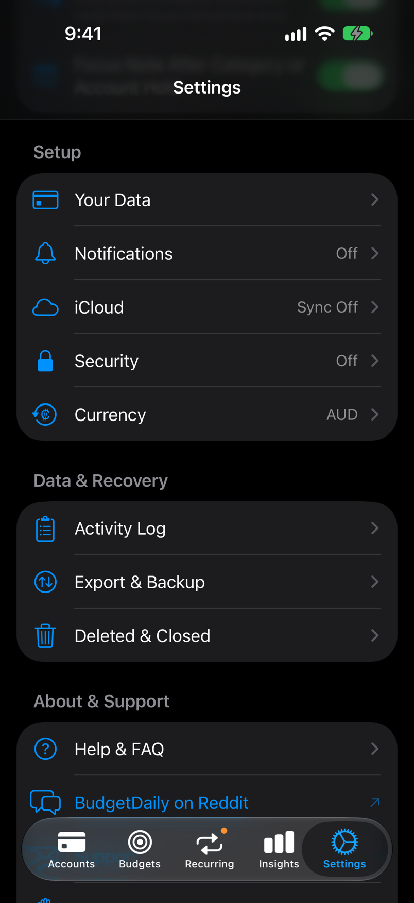
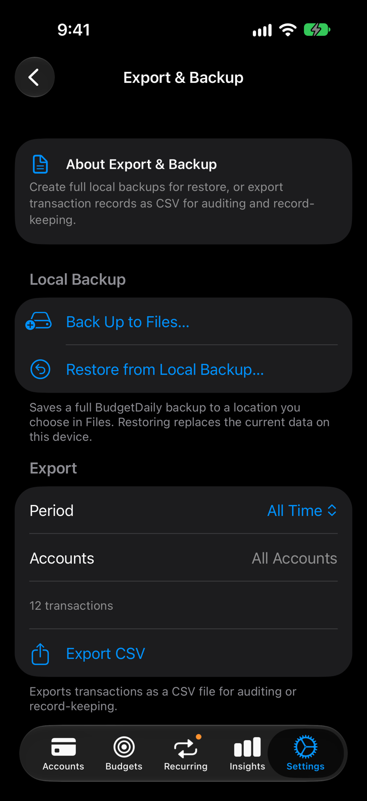

Guide
Back up and restore your data
A backup is a single file holding everything in BudgetDaily. You keep it wherever you like, and it is the way to move to a new phone or recover from a mistake.
Step by step
One screen at a time
-
1
Open Export & Backup
Open Settings and scroll to Data & Recovery. Tap Export & Backup.

-
2
Tap Back Up to Files
Choose where to save the file. iCloud Drive or another cloud folder is safest, because the copy survives if you lose the phone.

-
3
Restore when you need to
On the same screen, tap Restore from Local Backup and pick a backup file.
Restoring replaces everything currently in the app on this device. Make a fresh backup first if there is anything you might want back.
-
4
Export a spreadsheet copy
Export CSV saves your transactions as a file you can open in a spreadsheet. Choose a period and which accounts to include. A CSV is for your records; it cannot be restored into the app.
What to do next
Related tips and guides
Back up before big changes, such as changing phones or tidying up old accounts.
Deleted something by accident? Check Deleted & Closed in Settings before restoring a backup.
Balance does not match your bank? Reconcile an account before reaching for a restore.